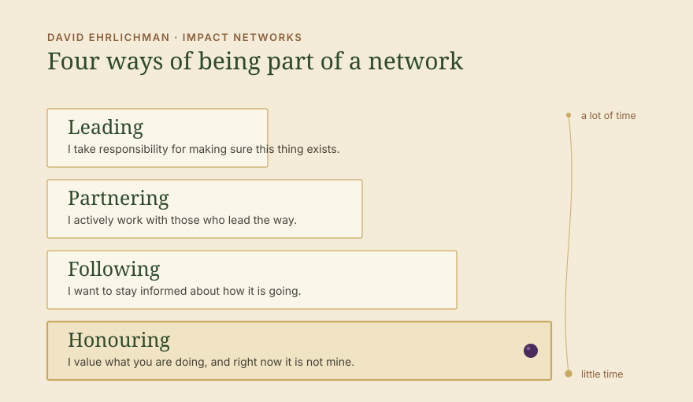
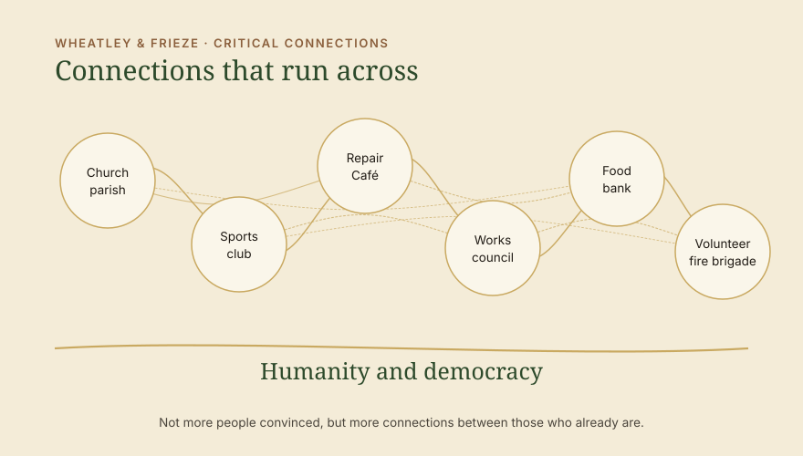

Impulse · Thinking of society as a network: democracy and humanity are no longer a given
The election in Saxony-Anhalt has shown how close to catastrophe we stand. As alarming as the result is, we can be glad that the AfD once again fell short of an absolute majority. We have gained some time, and we should use it. For us, using it means building a We that reaches beyond the individual causes, so that we strengthen the common ground again. We have had that ground for a long time; we simply stopped seeing it. And networking on it begins far earlier than we think.

The common ground
What we share without seeing it
The ground is a certain kind of humanity, meaning the dignity of the person, together with democratic basic rights. Humanity and democracy, and that should be enough to think in networks.
Whoever meets that is doing something good. The food bank with its lunch table, the left-wing local group with its repair café, the sports club, the works council, or the church parish. The list is long.
And although we probably agree with all of it, we no longer see what the common ground is, and we forget that we think it is good. Depending on our own point of view we criticise the religion, the commercial activity of the company, the sports club, or the fact that homeless people do not work. What we hardly notice any more, because it was the basis of our society for so long and therefore taken for granted, is that we could recognise and value what people do and intend far more often, without having to agree with all of it.
Instead of recognising the intention and the work, we criticise. Of all places, you get involved in the church. You are with the left in the local group. Sport changes nothing. Why bother with apprentices when the whole company is going down anyway. This happens particularly often where people meet each other outside a shared cause, in the family or in looser circles. That is exactly where solidarity with what the other person does goes missing.
We should all understand that the things we were able to take for granted here for 75 years will not stay guaranteed, and that keeping them is now work. If we want democracy and humanity to remain part of our social system, then we should also learn to express tolerance, recognition and appreciation. I do not have to want what the other person does. I have to see that they mean well and that they respect democracy. We need neither to argue the difference out nor to dissolve it. It may remain, and in the end it is what our democracy rests on: freedom.


What we are up against
The authoritarian shortcut through fear and belonging
The far right is growing alarmingly fast, and part of that lies in its authoritarian structures. People who are once carried along emotionally there, mostly through fear, give up a great deal of that freedom at once and put their trust in the individuals. What those individuals say afterwards then quickly counts as one’s own opinion, and from the outside it looks closed. A sense of belonging arises quickly, but for most people it still rests, I hope, on a false perception rather than on their own view. If belonging is not an option on the democratic side, though, how do we expect to turn the trend around? Is there an alternative?
What we should set against it consists of many people who decide for themselves and support one another. That takes longer and it is work, and it withstands more, because it does not depend on any single person. For it to be there in the moment it is needed, we have to shape the connections actively. And that feeling of belonging is something we should create too, on solid ground. On the ground of democracy and humanity, we belong. We are society.
Four ways of taking part
Networking begins with appreciation
In Impact Networks, David Ehrlichman describes how networks emerge that set out to move something in society. One of his observations is that networks have different levels. People take part in a network in four different ways, and a network lives on all four of them counting.
Leading. I take responsibility for making sure this thing exists.
Partnering. I actively work with those who lead the way.
Following. I want to stay informed about how it is going.
Honouring. I value what you are doing, and right now it is not mine.

This is about honouring. The first two cost time, and hardly anyone has time for more than one or two causes. The third has its limit as well, because nobody can be kept informed about everything and subscribe to every newsletter.
The fourth is the one we overlook. It costs no time, no money and no membership, and it is the beginning of everything else. What happens in its place today is criticism from the levels above. Anyone who gets something going is told why it is the wrong thing or too little. That takes away people’s appetite, and so many stop who would have carried on. Appreciation keeps them in the work, and that is the strengthening we need. Great that you are standing up for your cause! This is where the network emerges that we call society, which was taken for granted for so long and sadly is no longer. This is where the strengthening of civil society begins. Today, that is anti-fascism.
In practice
What this looks like in everyday life
As a conservative voter, writing to the repair café of the left-wing local group that it is good how much gets repaired there. As someone on the left, telling your uncle at the boxing club how strong it is that he looks after the young people there. As a manager, telling the head of the works council that it is good that he is committed, as exhausting as all of this is for everyone right now.
As someone who has no use for church, telling the parish that their lunch table feeds people every week. As a climate activist, telling the shooting club that it brings more people in the village together than anything else. As a city dweller, telling the volunteer fire brigade in the countryside that it is good that someone drives out at night. As an entrepreneur, telling the food bank that it is good that it exists.
A short email is enough, a quick "cool" in conversation at the table after a family service. I think what you are doing is good, keep going. Whoever receives that carries on differently the next day, and whoever writes it has a connection that did not exist before.
This also holds where someone chooses means I would not choose myself. Non-violent actions that go to the edge of the law have a cause behind them, and I can understand that cause without supporting the action. Voicing appreciation for the commitment, precisely when the action is being criticised, makes an important difference to the strengthening of society.
Holding society together
Connections right across the democratic spectrum

In 2007, Meg Wheatley and Deborah Frieze wrote a sentence for the Berkana Institute that helps us here: rather than worry about critical mass, our work is to foster critical connections. So it is not about the number of people convinced, but about the connections between those who want to preserve the democratic core.
We need these connections today right across the democratic spectrum, from the Left Party to the Christian Democrats. They arise more easily in civil society than between the parties. Little is to be expected from the parties at the moment, because the polarisation long ago started running between them. When the connections are there at the base, more becomes possible at the top. Then a Christian Democratic party in Saxony-Anhalt can say that it will govern together with the other democratic parties for the next four years and see what can be moved jointly.
That is what holding society together is about. The polarisation within the democratic spectrum is what is harming us right now, and it drives people to the right. Recognition and appreciation for democratic, humane action, which is possible in so many places, takes the ground away from it.
Really strengthening civil society in its full breadth, on the basis of humanity and democracy, preserves the society we know. That is what all of us can do. Of course there is work beyond this to prevent majorities for the far right, but this should be the ground we all work on together. If not now, when?
Let us all voice more recognition and appreciation, and do it where we find it difficult, where the connections are critical, and where we should admit to ourselves: this is democratic, there is a cause behind it that means something good for people. Keep it up, we need this.
→ Systems Change → Cooperate with us
Sources
- Ehrlichman, D.: Impact Networks. Create Connection, Spark Collaboration, and Catalyze Systemic Change. Berrett-Koehler, Oakland 2021.
- Wheatley, M.; Frieze, D.: Using Emergence to Take Social Innovations to Scale. The Berkana Institute, in: Fieldnotes, Winter 2007.